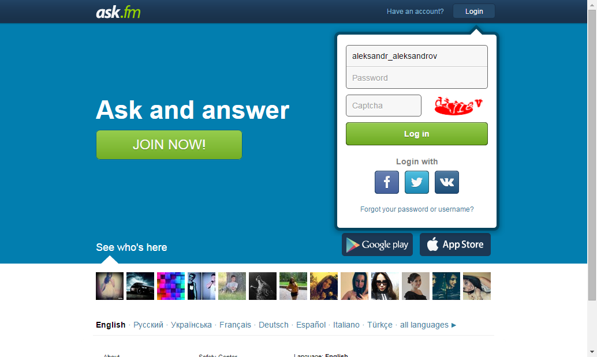
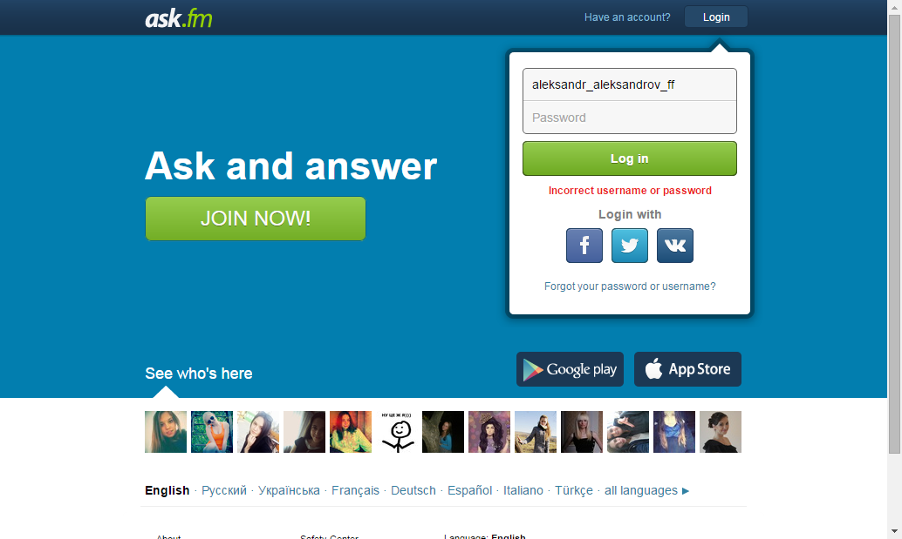

[17:03:45:775]: Open Ask.fm
[17:03:53:670]: Wait for link-login
[17:03:53:755]: Click on link : "link-login"
[17:03:53:927]: Wait for logBox
[17:03:53:994]: Write login
[17:03:54:214]: Write password
[17:03:54:453]: Click on button : "Entry"
[17:03:54:561]: Wait for link-logout
[17:03:57:488]: Click Logout
[17:03:59:001]: Wait for link-login
[17:03:59:060]: Open Ask.fm
[17:04:00:275]: Wait for link-login
[17:04:00:364]: Click on link : "link-login"
[17:04:00:478]: Wait for logBox
[17:04:00:547]: Write login
[17:04:01:068]: Write password
[17:04:01:257]: Click on button : "Entry"
[17:04:01:415]: Wait for link-logout
[17:04:17:087]: Screenshot saved:

[17:04:17:088]: Open Ask.fm
[17:04:18:005]: Wait for link-login
[17:04:18:048]: Click on link : "link-login"
[17:04:18:137]: Wait for logBox
[17:04:18:187]: Write login
[17:04:18:451]: Write password
[17:04:18:568]: Click on button : "Entry"
[17:04:18:659]: Wait for link-logout
[17:04:34:126]: Screenshot saved:

[17:04:40:961]: Open Ask.fm
[17:04:46:333]: Wait for link-login
[17:04:46:400]: Click on link : "link-login"
[17:04:46:550]: Wait for logBox
[17:04:46:820]: Write login
[17:04:47:335]: Write password
[17:04:47:613]: Click on button : "Entry"
[17:04:47:774]: Wait for link-logout
[17:04:59:685]: Get the number of questions
[17:04:59:760]: Click Logout
[17:05:02:111]: Wait for link-login
[17:05:02:182]: Open Ask.fm
[17:05:03:581]: Wait for link-login
[17:05:03:647]: Click on link : "link-login"
[17:05:03:748]: Wait for logBox
[17:05:03:833]: Write login
[17:05:04:030]: Write password
[17:05:04:326]: Click on button : "Entry"
[17:05:04:538]: Wait for link-logout
[17:05:18:539]: Click on link : main_menu_friends
[17:05:19:740]: Wait for link-name
[17:05:20:099]: Click on link : "link-name"
[17:05:21:686]: Wait for profile-input
[17:05:21:774]: Type question in text area
[17:05:27:080]: Send question
[17:05:27:234]: Wait for text confirm that message was sent
[17:05:27:855]: Click Logout
[17:05:29:331]: Wait for link-login
[17:05:29:396]: Open Ask.fm
[17:05:30:201]: Wait for link-login
[17:05:30:262]: Click on link : "link-login"
[17:05:30:358]: Wait for logBox
[17:05:30:495]: Write login
[17:05:30:820]: Write password
[17:05:31:173]: Click on button : "Entry"
[17:05:31:359]: Wait for link-logout
[17:05:32:751]: Get the number of questions
[17:05:32:815]: Click Logout
[17:05:33:791]: Wait for link-login
{kind=link}
{kind=link}